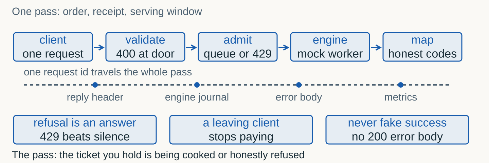
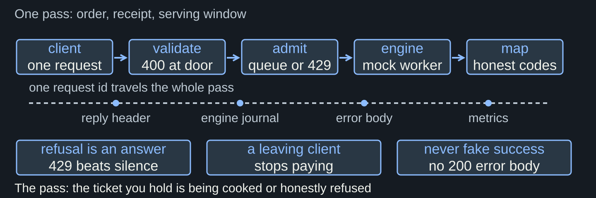
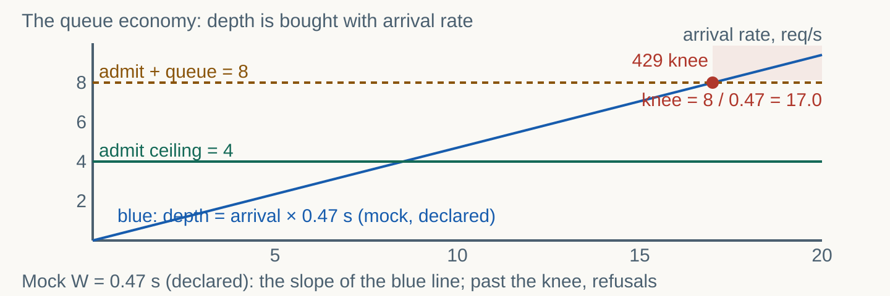
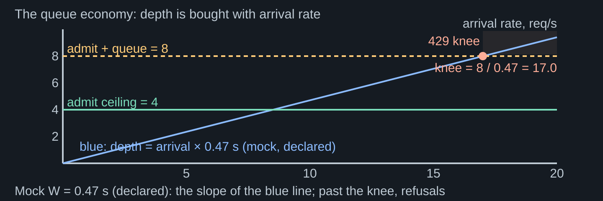
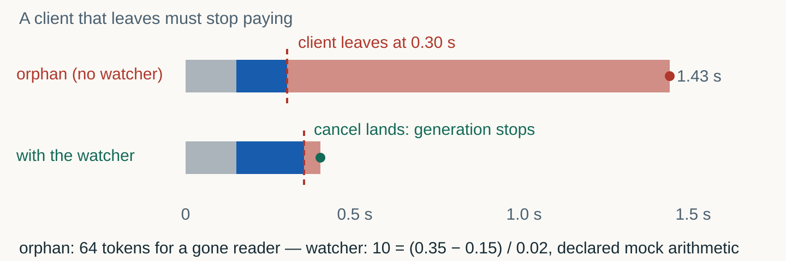
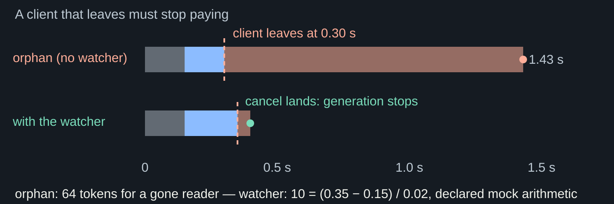
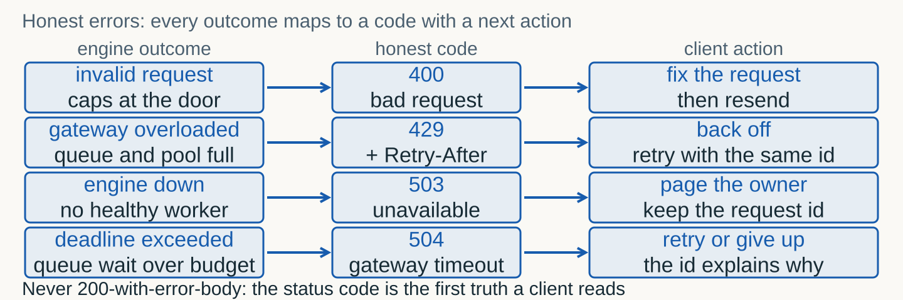
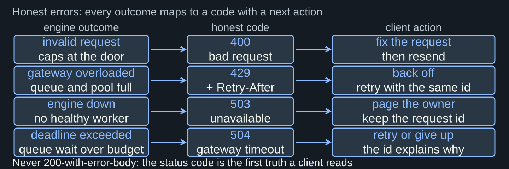

One thin gateway over the frozen profile: orders become receipts, refusals stay honest.
A frozen engine profile (seqs-32) with proof: saturation curve, tail, rollback plan. But a profile is an internal component — a client cannot import it.
A stranger sends HTTP. One thin gateway decides: validate, admit, serve, map, reply. Every Topic 06 mechanism reappears as an API decision.


| Stage | Decision it owns | Refuses with |
|---|---|---|
| validate | Are the caps respected: prompt length, token budget | 400 at the door |
| admit | Is there a service slot, a bounded wait, or nothing | 429 + Retry-After |
| engine | Generate under the frozen profile | delegates outcomes |
| map | Which honest code names this terminal outcome | 503 / 504 with the id |
Prompt text, a token budget, an optional schema for structured replies. Hard caps are PUBLIC: a client that knows the ceiling can fix its own request.
Liveness plus in-flight count. The daemon, the probes and the on-call read the same pulse — no private health route, no hidden truth.
| Field | Cap | Refusal |
|---|---|---|
prompt | Required, at most 512 characters | 400 with the reason |
max_tokens | Integer in 1..64 | 400 with the reason |
response_schema | Optional mini-schema for guided JSON | 422 on violation |
X-Request-Id (reply) | Assigned at the door, echoed everywhere | — |
The gateway mints the id before validation, admission or generation. From that moment the request has a name in every log line.
Reply header, engine journal, error body, metrics snapshot. The error body carries it verbatim: the retrying client correlates its own attempts.
Every arrival is accepted, depth grows, and the delay is paid by clients who were never asked. The pager sees nothing until the timeouts arrive.
Capacity in service, a finite waiting line, and an honest refusal beyond. Depth becomes a declared number; refusal becomes a designed answer.


Now: refused, with a declared pause and the request id. The retry is a decision, not a gamble — backoff is computable.
A rising rejected counter is a designed signal, not silent rot. Refusal is capacity speaking; an endless queue is capacity lying.
Every admitted request carries a budget. A queue wait beyond it becomes 504 with the id — the slot returns to service, the client learns why.
A closed socket is a decision by the client. The gateway must stop the generation, journal outcome cancelled, and count the tokens burned for nobody.




| Engine outcome | Code | Client action |
|---|---|---|
| Invalid request (caps are public) | 400 | Fix the request, resend |
| Gateway overloaded (pool 4+4 full) | 429 + Retry-After | Back off, retry with the same id |
| Engine down (no healthy worker) | 503 | Page the owner; keep the id |
| Deadline exceeded (queue wait over budget) | 504 | Retry or give up — the id explains why |
A 200 envelope with an error inside passes every shallow health check, poisons the client’s success path, and corrupts its retry logic without a trace.
The status code is the first truth a client reads. Success and failure never share an envelope; the body explains, the code decides.
Server-sent events deliver text while the engine decodes. The client sees progress; the gateway still owns admission, deadline and the error map.
A client gone at frame k is the Episode 5 mechanism one frame later: stop the task, journal the waste. No new machinery — the same watcher.
An optional response schema rides with the prompt. The engine constrains decoding; the gateway validates the reply against the SAME schema before answering.
A reply that breaks the schema is a visible 422 with the exact path — not a silent cast, not a 200 with apologies. The client sees which field lied.
Accepted, rejected-429, cancelled, in-flight, waste. Each exists because a named decision needs it — a metric you did not plan is a metric you will fake.
At snapshot time cancelled reads zero: cancellations arrive only after the watcher block. A zero that is explained beats a number that is decorated.
| Counter | Feeds | Danger if absent |
|---|---|---|
| accepted | Capacity against arrival rate | You size the fleet by vibes |
| rejected (429) | Backpressure health; SLO budget | Overload stays invisible until timeouts |
| cancelled | Waste accounting; client behavior | Abandoned generation burns silently |
| in-flight | Live saturation vs the frozen profile | The knee arrives unannounced |
| waste tokens | The price of leaving clients | Cancellation looks free forever |
| Wave | Completed | Rejected 429 | Cancelled |
|---|---|---|---|
| 8 clients | majority served, two disconnects cancelled | 0% | about 25% |
| 24 clients | the admitted few finish | about 2/3 refused — the knee | the armed watcher stops the rest |
Tail inside the gateway, error budget, rejection policy: who gets 429 and with what pause. One paragraph a product owner and an on-call both sign.
The policy is part of the promise: an honest 429 with Retry-After IS the contract working, not an apology. Silence and endless queues are the breach.
| Clause | Draft value | Who signs it |
|---|---|---|
| p95 inside the gateway | 2.0 s | product owner |
| Error budget | 1% of attempts | on-call |
| Rejection policy | 429 + Retry-After at pool 4+4, exponential retry | both |
| Cancellation accounting | waste tokens journaled per request | on-call |
| Bridge | T09 ships this app as an immutable image | platform |
Nothing about the pass. The same gateway, the same probes, the same 429s — packaged as an immutable image so behavior stops depending on the host.
A contract that is not yet honest cannot be frozen into an image. First the pass refuses correctly; then the image preserves the refusal everywhere.
Latency knobs are written in the notebook and on every figure: the mechanism runs in minutes on free CPU. No number here quotes vLLM.
Real detection latency, preemption storms, scheduler jitter: the live vLLM behind this gateway is an owner demonstration with retained evidence.
Predict the contract. Keep refusals honest. Stop the orphaned generation.
Count the waste. Journal everything.